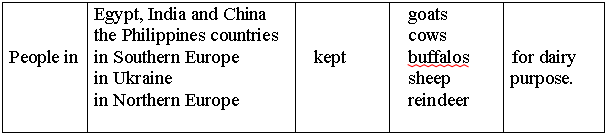

Lesson 20
UNIT 3
Livestock processing technology
BASIC PROCESSING TECHNOLOGIES OF ANIMAL PRODUCTS
Technology of cheese-making
Learn the active vocabulary of the Lesson and be ready to
use it in your further work:
Whey
n – сироватка; сколотини; be
formed (by) – утворюватися; coagulate v
– коагулювати; rennet n
– сичуг; similar
adj – подібний, схожий; enzyme
n – ензим, фермент; draining
off – відкачування, вижимання; liquid
adj – рідинний; be
added (to) – додаватися (до); acidified
milk – ацидофільне молоко; form
/ to shape v – надавати форму; формувати;
утворювати; firm
adj – твердий; curd
n – згусток; be
treated – оброблятися; kind
n – вид; way
n – шлях, спосіб, метод; undergo
v – підлягати; cutting
– нарізування, розрізання; warming
up – нагрівання, підігрівання; pressing
– пресування, вижимання; mold
n – пліснява; форма; be
ripened – визрівати; storing
– зберігання; particular adj
– певний; humidity n
– вологість; ripening
– визрівання; curing
– заготівля; cheese-making
– виготовлення сиру; buffalo
n – буйвол; reindeer
n – північний олень (олені); saturated
fat – насичений жир; sodium n
– натрій; producer n
– виробник; hard
cheese – твердий сир; cottage
cheese – зернений сир; among
adv – серед; cheese
vat – цистерна (бак) для сиру; vessel n – посудина; pump
v – накачувати; acid
n,
adj – 1. кислота; 2. кислий; lactic
acid – молочна кислота; sour
v – окислювати; заквашувати.
Read
and translate the text: CHEESE Cheese
is a very nutritional food product. It is rich in protein and is a good source
of vitamins and minerals such as calcium, phosphorus, and vitamin A. Cheese is
high in calories, saturated fat, and sodium. Cheese
is formed by coagulation of milk by rennet or other similar enzymes, and the
draining off of the liquid whey. When rennet is added to warm acidified milk,
the
milk protein casein coagulates to form a firm curd which is treated in various
ways to make cheeses of different kinds. The
curd can undergo cutting, warming up, or pressing. Then it is usually shaped
into a mold and ripened by storing for some time at a particular temperature and
humidity. The ripening, or curing, process is the result of bacteriological
processes. For
cheese-making they use milk from cows, sheep, goats, the buffalo, reindeer,
horses, yaks. Hard
cheeses are the most popular among cheese. The largest producers of hard cheese
are the USA, France, Italy, Germany, Russia, Canada, the
Netherlands, Denmark,
Mexico and Argentina. In Ukraine hard cheese and cottage cheese
are among
the favourites. There
are a number of ingredients which are essential for cheesemaking but some
ingredients, e.g. colouring,
added chemicals etc. are
not required for all varieties of cheese. Milk. Good
quality milk from the cow, sheep, goat etc is required. A knowledge of its
chemical composition
and bacteriological quality is desirable if cheese of consistent quality is to
be made. Starter.
Certain cheese varieties require starters (pure cultures of lactic acid
bacteria) containing organisms
with specific functions, e.g. flavour development. The
recipe will indicate the type and quantity of
starter to be used and temperature conditions. Colour. The
recipe and the market will determine if colouring matter should be used.
Occasionally it is required
to bleach the original colour of the milk and to whiten the curd. Chemicals.
Chemicals such as calcium chloride and sodium nitrate are recommended in recipes
for some
varieties of cheese to improve curd quality and prevent the growth of organisms
which may cause problems
during the ripening or maturing of the cheese. Coagulant. Rennet
is the usual coagulant used but the juice extract of some
fruits and plants, e.g. lemons and
Calotropis procera may
be used for some cheese varieties. Salt. Salt
(sodium chloride) may be added to some varieties of cheese, the quantity and
method of addition
depending on the recipe. Salt may be added directly to the milk
or curd pieces; it may be rubbed into
the finished cheese or the cheese may be immersed in a brine
solution. GRAMMAR
EXERCISES I.
Answer the following
questions:
1.
Why is cheese a very nutritional product? 2.
How is cheese formed? 3.
What processes can cheese undergo after adding rennet? 4.
The milk of which animals can be used for cheese-making? 5.
What cheeses are
the most popular among cheese? 6.
What countries are the largest producers of hard cheeses? 7.
What ingredients for cheese-making do you know? 8.
Is good quality milk from the cow, sheep, goat etc required? 9.
What chemicals are recommended in recipes for some varieties of cheese to
improve curd quality? II. Match
the paragraph (A) to its heading (B):
III.
Remove suffixes in the following words, translate them and tell what part of the
speech they belong to:
Nutritional,
nutrient, nutriment, nutrition, nutritionist, nutritious, nutritive; product,
production, productive, productivity; formed, form, formal, formaldehyde,
formalin, formalism, formalist, formality, formalize; coagulation, coagulant,
coagulate; similar, similarity, similarly, simile, similize; various, vary;
different, differ, difference, differentia; popular, popularity, popularization,
popularize, popularly, populate, population.
IV.
Arrange the following in pairs of synonyms to translate them:
a)
cheese, food, kind, rich, good, similar, liquid, warm, to form, way, different,
storing , process, hard, among, producer, use, favourite, cottage cheese,
humidity.
b) mood,
utilize,
the
same, heavy, conservation, expensive, curd, fluid, diet, various, hot,
operation, type, manufacturer, cheese casserole, fine,
moisture, to
compose, between, beloved.
V.
Find an extra word:
a)
cows, sheep, goats, the buffalo, tiger, reindeer, horses, yaks; b)
cheese, cheese-making, warming up, milk, meat, pressing, storing; c)
hard cheese, cottage cheese, yogurt, cheddar; d)
starter, beef, colour, chemicals, coagulant, salt.
VI.
Complete the sentences:

VII. Match
the words with
its definitions:
VIII.
Fill
in the blanks with the words from the box and you will learn some information
about Cheddar, the most important cheese in many English-speaking
countries:
PRODUCTION
OF CHEDDAR Cheddar
is an important 1_________ type in the United States, Britain, Australia,
Canada, and New Zealand. The Cheddar 2________ process employs nearly all the
basic treatments used in modern cheese-making. In
the factory 3________ is pasteurized at about 70 degrees C (158 degrees F)
to
kill all the pathogenic 4 ________ . After 5_________ to about 30 degrees C (86
degrees F), it is pumped into the cheese vat, a closed cylindrical vessel. Here
it is mixed with the starter, which is a 6_______ of lactic streptococci and
other organisms. These organisms sour the milk by fermenting the 7________, or
milk sugar, to lactic acid, in order to create the acid conditions necessary for
the rennet to act.
IX.
Read and ask questions on the text:
HARD
CHEESE This
category is reserved for extra-hard, extremely low-moisture cheeses like
Parmesan, Machego and Asiago. These cheeses are characterized by their pungent
saltiness and rich umami flavor profile. Because of their hardness, these
cheeses are often grated over dishes like pasta and soup, not
sliced. Manchego
cheese pieces surrounded by Spanish chorizo, olives, bread slices and grapes.
This
selection of Spanish tapas shows manchego cheese pieces surrounded by Spanish
chorizo, olives, bread slices and grapes. Machego is an example of a hard
cheese. Parmesan
is a generic name for the original Parmigiano-Reggiano from Italy. To make this
classic cheese, large wheels of freshly curdled milk are first soaked in a salt
bath for three months, then aged for at least 24 months, but up to three years.
The cheese forms a thick natural rind that's hard on the teeth but is a great
addition to soups and stocks. If
you notice little crunchy bits in a well-aged, hard cheese, don't fret. Those
aren't hunks of salt, says Wright, but that form as a natural byproduct of
the slow-aging process. The crystals themselves don't impart any flavor, but
they are a sign that bacteria are doing their work breaking down the lactose and
amino acids in the cheese, which will result in a more robust
flavor. Hard
cheeses include: -
Parmigiano-Reggiano; -
Asiago; -
Pecorino; -
Manchego.
X.
Put the sentences in the correct order:
1.
Quality / good / milk / from / the / cow /, sheep,/ etc / is required /
goat. 2.
Are / a number / of ingredients / which / essential / for / cheesemaking / are /
there? 3.
Salt / may / be added / to / the / milk / or / curd / pieces /
directly. 4.
A cheesemaking recipe / a / guide / for / the manufacture / of / a / specific /
variety / of / cheese / is. 5. The first / making-cheese / factories / were / merely /
enlarged / forms / the / farmhouse / dairy / of
.